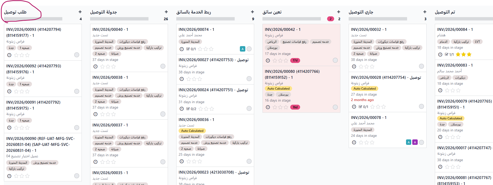
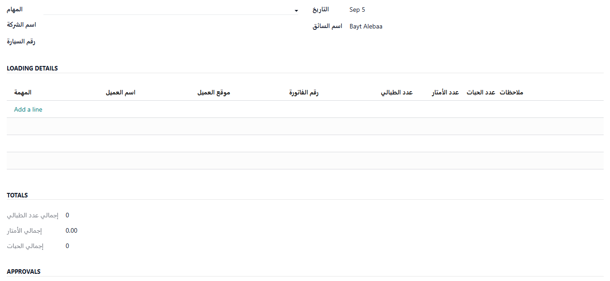

اختيار التاريخ والوقت

يختار العميل التاريخ والوقت المناسبين له ضمن الفترة المتاحة للحجز.
Odoo After-Sales Service
اختر التجربة التدريبية التي تريد مراجعتها.
اختر التجربة التدريبية التي تريد مراجعتها.
Odoo Delivery Workflow

تبدأ دورة العمل بوصول الفاتورة من SAP. وإذا كانت الفاتورة تتضمن خدمة توصيل، فإنها تظهر داخل Odoo في مرحلة "طلب توصيل" لبدء متابعة التنفيذ.
بعد وصول الفاتورة وظهورها ضمن مهمة التوصيل، يتم الدخول إلى المهمة وبدء تجهيزها، وذلك من خلال تعيين المشرف المسؤول عن المتابعة، وتحديد المسؤول عن تنفيذ الخدمة، وتحديد موعد الخدمة، بالإضافة إلى تحديد الفترة المسموح خلالها بحجز الموعد.


بعد ظهور مهمة التوصيل، يتم تجهيزها للتنفيذ من خلال تعيين المشرف المسؤول عن المتابعة، وتحديد السائق الذي سينفذ الخدمة، ثم تحديد موعد الخدمة والفترة المسموح للعميل خلالها بالحجز.
بعد تجهيز بيانات الخدمة وفترة الحجز، يتم إنشاء رابط خاص بالعميل لاستكمال بيانات الموعد.

بعد تجهيز بيانات المهمة، يظهر رابط حجز الموعد ليتم إرساله إلى العميل. يفتح العميل الرابط، ويحدد موقع التنفيذ والموعد المناسب ضمن الفترة المسموح بها، ثم يؤكد الحجز. وإذا لزم الأمر، يمكن لخدمة العملاء تنفيذ الحجز نيابةً عن العميل.
يختار العميل التاريخ والوقت المناسبين له ضمن الفترة المتاحة للحجز.

بعدها يراجع العميل بياناته ويحدد موقع تنفيذ الخدمة قبل تأكيد الموعد.

بعد تأكيد البيانات والموعد، يتم تثبيت الحجز وتظهر للعميل رسالة تأكيد الموعد.

عند انتقال المهمة إلى مرحلة تعيين السائق، يظهر النموذج المربوط بالمهة، مثل نموذج سند التحميل في حال التوصيل .

يتم تنفيذ خدمة التوصيل من خلال بوابة السائق بدءًا من تشغيل المهمة وحتى تأكيد الاستلام واكتمال التوصيل.
بدء المهمة ← توثيق التنفيذ ← إنهاء المهمة

عند وصول السائق إلى موقع العميل يبدأ تنفيذ المهمة من خلال Start.

أثناء تنفيذ الخدمة يقوم السائق برفع صورة لتوثيق عملية التوصيل.

بعد الانتهاء من تنفيذ التوصيل يختار السائق End Task.
تأكيد العميل ← اكتمال التوصيل

بعد إنهاء المهمة يتم إرسال رمز OTP إلى العميل للتأكد من استلام الخدمة.

بعد إدخال رمز OTP بنجاح تصبح المهمة Completed ويتم تأكيد اكتمال خدمة التوصيل.